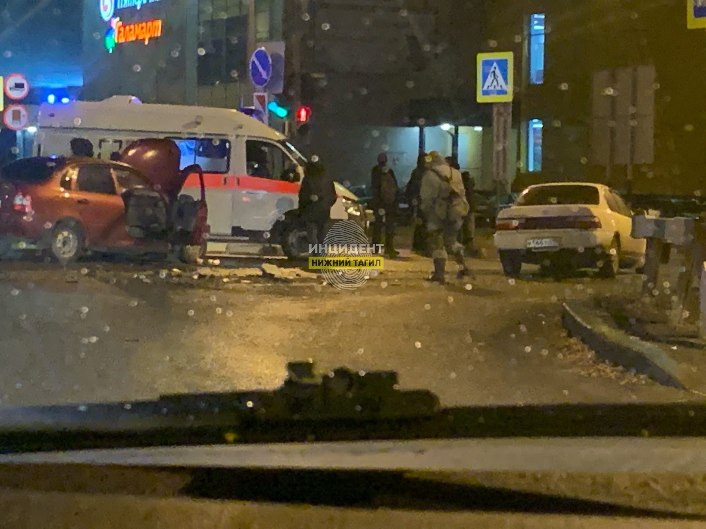
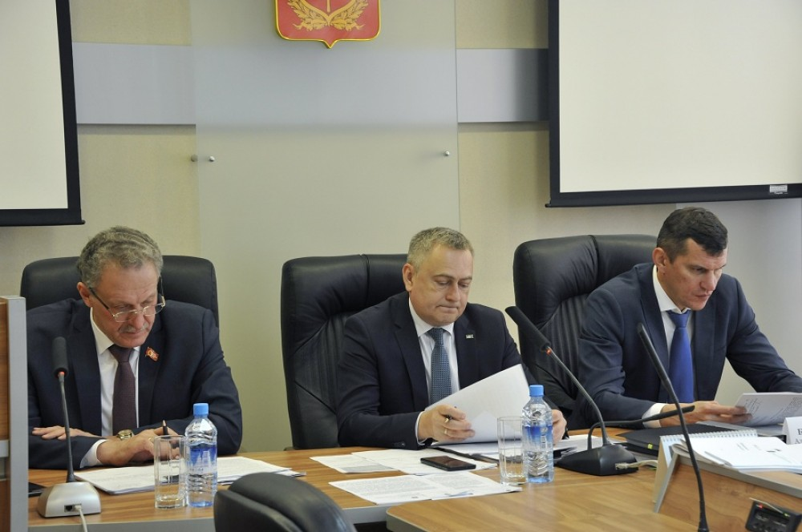

25.10.2022 «В Нижнем Тагиле парень без прав устроил аварию»
Авария произошла вечером в понедельник 24 октября на перекрёстке улиц Серова и Пархоменко в районе ТЦ «Квадрат». 21-летний водитель Лада Калина, двигаясь со стороны ул. Первомайской, при повороте налево в сторону ул. Красная с ул. Серова врезался во встречную Toyota под управлением 31-летнего мужчины.
26.10.2022 «Тагильские депутаты испугались чрезмерной нагрузки на бизнес »
На заседании постоянной комиссии по бюджету экономической политике и инвестициям Нижнетагильской городской думы депутаты отказались поддержать предложение об индексации ставки арендной платы за пользование объектами муниципального нежилого фонда на 2023 год.
26.10.2022 «Завезли танки и БМП-2»: в Елани после проверки замминистра обороны произошли «разительные изменения»
После визита заместителя министра обороны России генерал-полковника Юнус-Бека Евкурова в Елань в свердловском учебном центре произошли «разительные изменения». Об этом сообщил депутат Госдумы Максим Иванов порталу 66.ru. По его словам, появилась техника, благодаря которой наладили подготовку мобилизованных.

26.10.2022 «Строительство моста через Тагильский пруд затягивается и дорожает»
Работы на новом мосту через Нижнетагильский пруд продолжатся в 2023 году. Для этого с генподрядчиком «Альмакоргруп» администрация заключит дополнительное соглашение. Об этом сообщил заместитель мэра по горхозяйству и строительству Егор Копысов. В первую очередь речь идёт о работах по благоустройству территории.